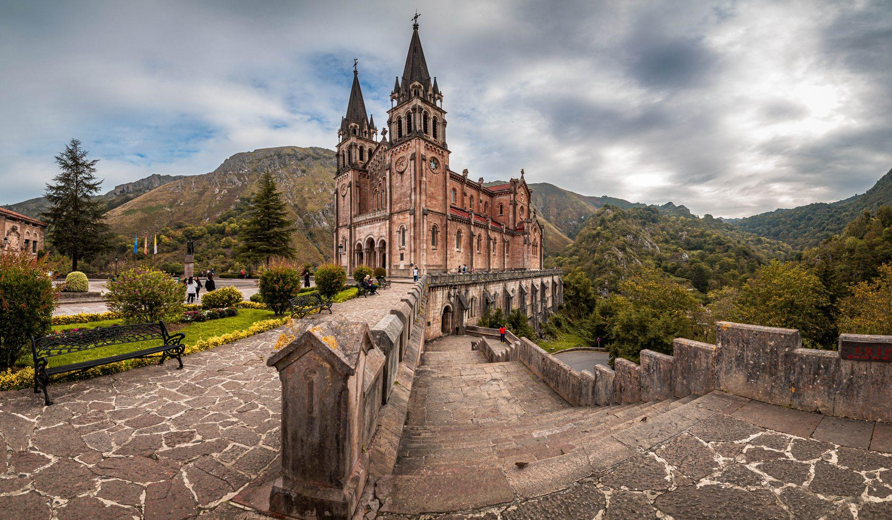
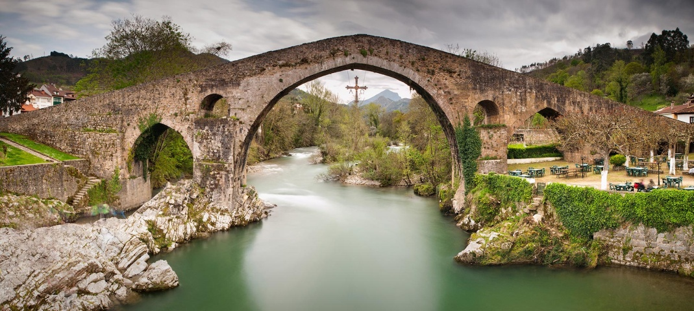
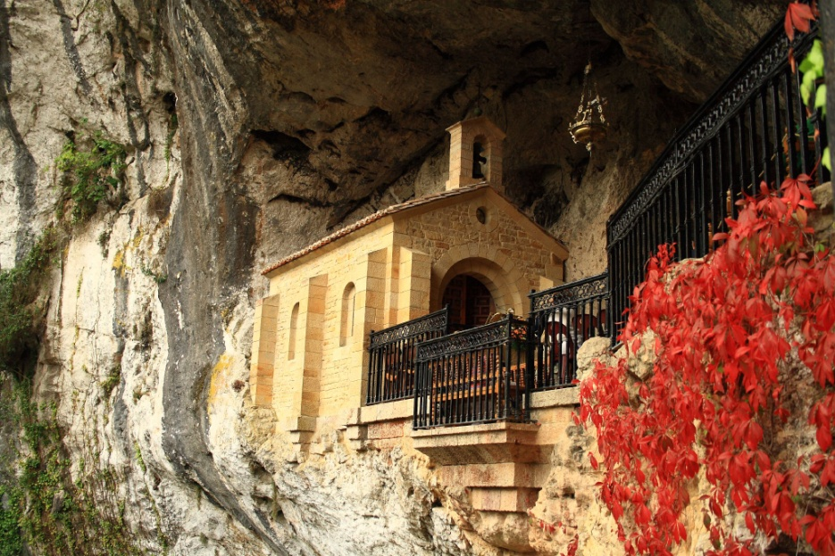
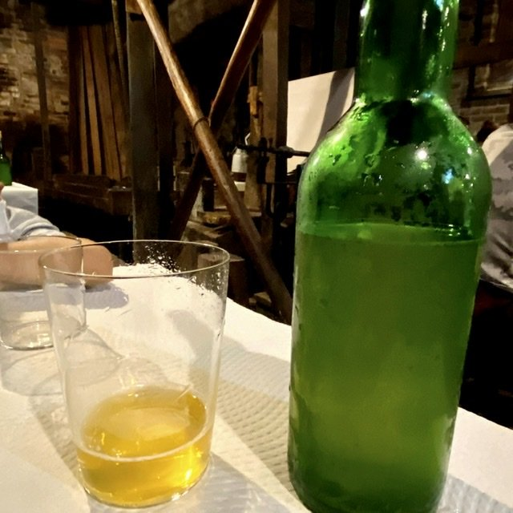
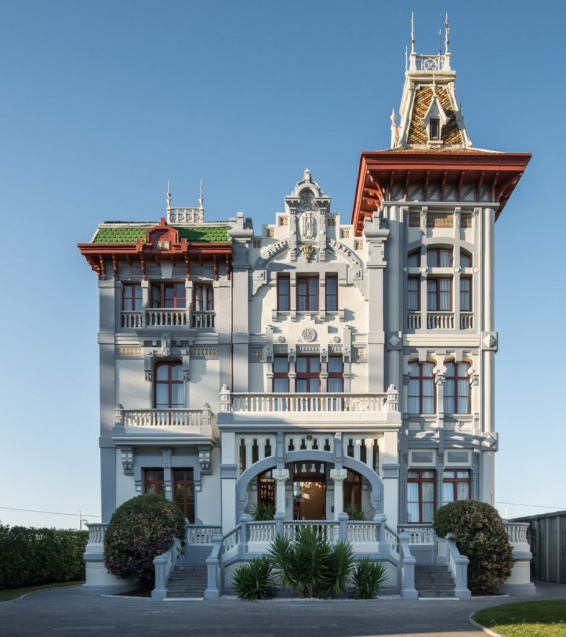
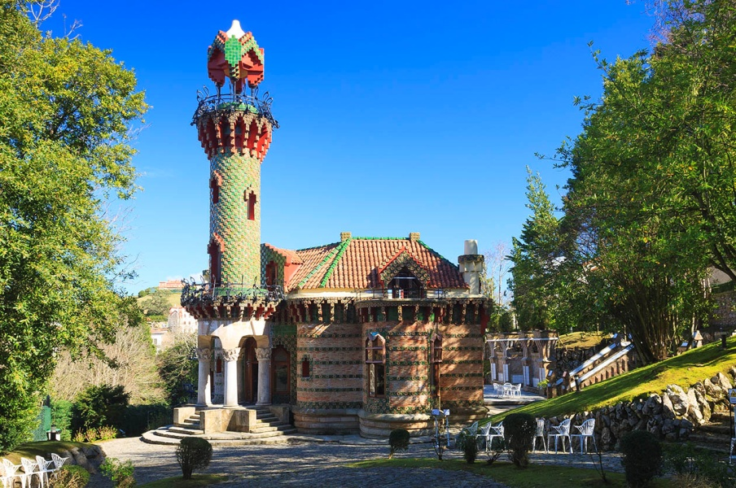
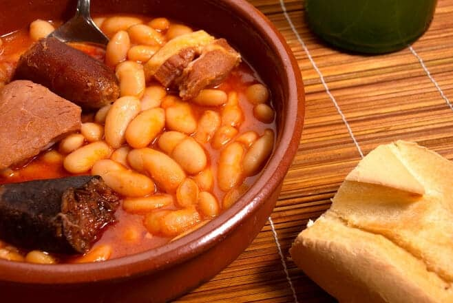
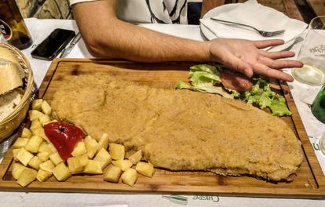
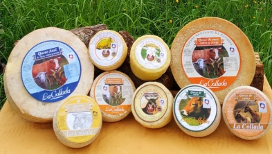

Une parenthèse entre montagnes, patrimoine et gastronomie
4 jours pour découvrir les grands paysages des Pics d'Europe et l'âme asturienne. Niché au cœur des Asturies, Cangas de Onís est la porte d'entrée des Pics d'Europe. Ancienne capitale du Royaume des Asturies, la ville mêle patrimoine, traditions et nature. À quelques kilomètres, Covadonga et ses lacs alpins offrent un décor spectaculaire, tandis que les villages côtiers de Ribadesella et San Vicente de la Barquera apportent une autre facette du voyage.
Le voyage en un coup d'œil

🏛️ Santillana del Mar
- Village médiéval emblématique
- Ruelles pavées et maisons traditionnelles
- Collégiale Santa Juliana
- Atmosphère intemporelle

🌉 Cangas de Onís
- Pont romain du VIIIe siècle
- Chapelle Sainte-Croix
- Ancienne capitale du Royaume
- Porte des Pics d'Europe

⛪ Covadonga
- Sanctuaire de la Sainte Grotte
- Basilique néo-romane
- Histoire fondatrice des Asturies
- Roi Pelayo et la Reconquista

🍺 Cidre & Fromages
- Cidre asturien versé de très haut
- Rituel de l'escanciado
- Cabrales & Gamonéu AOP
- Fromageries artisanales de montagne

🌊 Ribadesella
- Village des Indianos
- Port et façade maritime
- Plages et promenades
- Ambiance côtière authentique

🎨 Comillas
- Capricho de Gaudí
- Patrimoine architectural
- Village balnéaire élégant
- Université pontificale
Le Naranjo de Bulnes
Le Picu Urriellu, symbole des Pics d'Europe. 2 519 mètres de calcaire vertical, un défi pour les alpinistes du monde entier.
Votre itinéraire jour par jour
Jour 1 · Santillana → Cangas
Santillana del Mar
Balade dans l'un des villages emblématiques de Cantabrie : ruelles pavées, maisons traditionnelles en pierre et atmosphère médiévale préservée. La collégiale Santa Juliana et ses cloîtres romans.
Déjeuner cantabrique
Cocido montañés, morue sur lit de pisto et douceur finale : une première immersion gourmande dans les saveurs du Nord.
Arrivée à Cangas de Onís
Découverte du pont romain du VIIIe siècle, de la chapelle Sainte-Croix suspendue au-dessus de la rivière et de l'église de l'Assomption. Hébergement à l'hôtel rural de Labra, cadre montagneux authentique.
Soirée asturienne
Tapas, produits locaux et cidre asturien versé de très haut. Une première soirée au rythme des Asturies.
Jour 2 · Covadonga
Le Sanctuaire de Covadonga
La Sainte Grotte, la Basilique néo-romane et la statue du Roi Pelayo racontent l'histoire fondatrice des Asturies. Lieu de pèlerinage majeur depuis le VIIIe siècle.
Les lacs de Covadonga
Enol et Ercina : des lacs alpins au cœur d'un décor spectaculaire, propice à la randonnée. Panoramas sur le Naranjo de Bulnes.
Fromagerie artisanale
Découverte d'un savoir-faire local et des fromages de montagne, dont le Gamonéu AOP. Dégustation et rencontre avec les producteurs.
Dîner à Cangas
Retour à Cangas de Onís pour un dîner dans un restaurant traditionnel asturien.
Jour 3 · Mer & montagne
Mirador del Fitu
La Sierra del Sueve et un panorama exceptionnel ouvrent cette journée. Vue à 360° sur la mer Cantabrique et les Pics d'Europe.
Ribadesella
Le visage marin des Asturies : balade dans le port, déjeuner face à l'atmosphère côtière. C'est le village des célèbres Indianos, ces Asturiens partis faire fortune en Amérique.
Arenas de Cabrales
Retour vers la montagne et les paysages des Picos avant une soirée libre. Découverte du village et de ses environs.
Soirée libre
Temps libre pour profiter de l'hôtel rural ou explorer les environs.
Jour 4 · San Vicente & Comillas
San Vicente de la Barquera
Balade dans le port et le long de la ría, puis déjeuner avant de poursuivre la route. Village de pêcheurs authentique avec son château et son église gothique.
Comillas
Une étape patrimoniale avec le célèbre Capricho de Gaudí, villa d'inspiration orientale construite en 1883. Université pontificale et palais de Sobrellano.
Route du retour
Route du retour avec les images des Pics d'Europe en tête et le goût de la fabada sur les lèvres.
Les lacs de Covadonga
Enol et Ercina, deux joyaux alpins nichés à 1 100 m d'altitude. Un décor de carte postale au cœur du parc national des Pics d'Europe.
Gastronomie asturienne

🍲 Fabada
Ragoût de haricots blancs, chorizo, morcilla et jarret de porc. Le plat réconfortant par excellence.

🥩 Cachopo
Deux escalopes de veau farcies de jambon et de fromage, panées et frites. Spécialité d'Oviedo.

🧀 Fromages AOP
Cabrales, Gamonéu, Afuega'l Pitu. Les fromages bleus et à pâte molle des montagnes asturiennes.
🍺 Cidre asturien
Versé de très haut pour l'oxygéner. Boisson emblématique des Asturies, à accompagner de tapas.
L'esprit du voyage
🏔️ Montagne
Pics d'Europe · Covadonga · Lacs d'Enol & Ercina · Naranjo de Bulnes
🌊 Mer Cantabrique
Ribadesella · San Vicente · Comillas · Rías et ports de pêche
🏛️ Patrimoine
Santillana del Mar · Cangas de Onís · Capricho de Gaudí
✨ La philosophie VPDVOYAGES
- Sélection : Des étapes qui ont du sens dans le rythme global
- Équilibre : Montagne + mer + patrimoine + gastronomie
- Personnalisation : Le programme évolue selon vos envies
Des paysages grandioses, une culture forte et une gastronomie généreuse. Un voyage pensé pour prendre le temps de découvrir les Asturies.
Votre itinéraire sur la carte
De Santillana del Mar à Comillas, en passant par Cangas de Onís, Covadonga et Ribadesella : cliquez sur chaque point doré pour découvrir les étapes de votre escapade.
Bon séjour aux Pics d'Europe !
Escapade de 4 jours · Asturies & Cantabrie · Montagne, patrimoine, mer et gastronomie
Parlons de votre projet →